cloud
AWS · Alibaba Cloud · Telekom Malaysia
~> whoami
~> cat about.txt
II / ABOUT
I am a System Engineer and Network Security graduate from the German-Malaysian Institute. I enjoy working where infrastructure, observability, and security meet—whether supporting production systems or developing my skills through CTF challenges.
German-Malaysian Institute · 2023–2025 · CGPA 3.77
AWS · Alibaba Cloud · Telekom Malaysia
Cisco · Maipu · MikroTik · TP-Link · OSPF · BGP · VLAN · VPN · RTSP
Prometheus · Grafana · Bosch
Oracle · PostgreSQL · MySQL · Redis
Zenmap · Nessus · Wireshark · Burp Suite
Ubuntu · Kali · Zorin · SLES · VyOS · EulerOS
Docker · Kubernetes · Ansible · Nginx · PM2
KVM · VMware · ZStack · FusionSphere
Python · Bash · Java · HTML · CSS
III / EXPERIENCE
MYONE CORPORATION SDN BHD
Support production Linux environments, enterprise databases, and containerized services. I work with ticketing and incident workflows, infrastructure monitoring, automation, and security practices.
MYONE CORPORATION SDN BHD
Completed an industrial internship focused on practical systems and infrastructure experience. This portfolio intentionally describes the placement at a high level and does not disclose internal work.
GERMAN-MALAYSIAN INSTITUTE
Graduated with a CGPA of 3.77. Final Year Project: URL Phishing Detection System (UPDS).
IV / PROJECTS
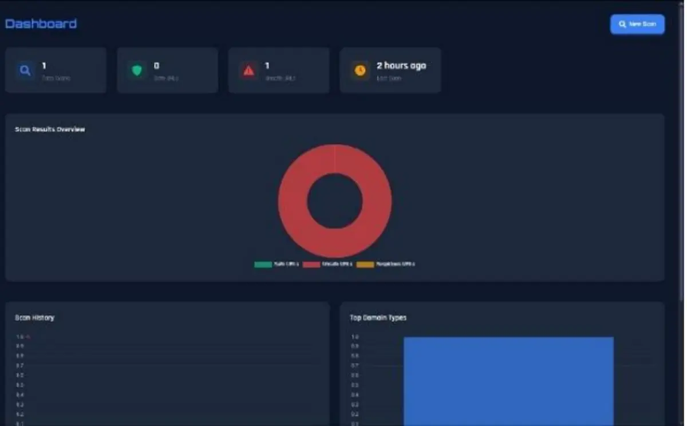
FINAL YEAR PROJECT · TEAM
A web platform that combines machine-learning classifiers with VirusTotal analysis to assess submitted URLs in real time.
Visit UPDS ↗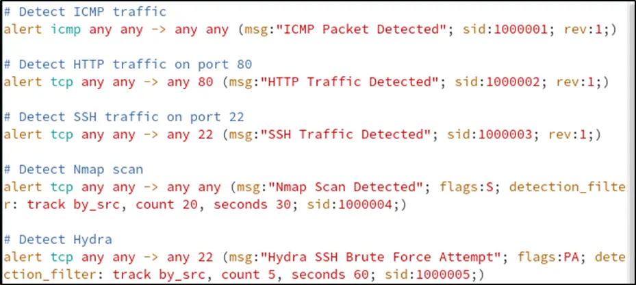
NETWORK SECURITY LAB · GROUP
Installed and configured Snort in a virtualized lab, then created rules and verified alerts for ICMP, HTTP, SSH, Nmap, and Hydra activity.
NETWORK MANAGEMENT · GROUP
Explored the deployment and use of Checkmk for monitoring a local host and a remote Linux server over SSH, including dashboard, service-search, and reporting workflows.
V / ACHIEVEMENTS
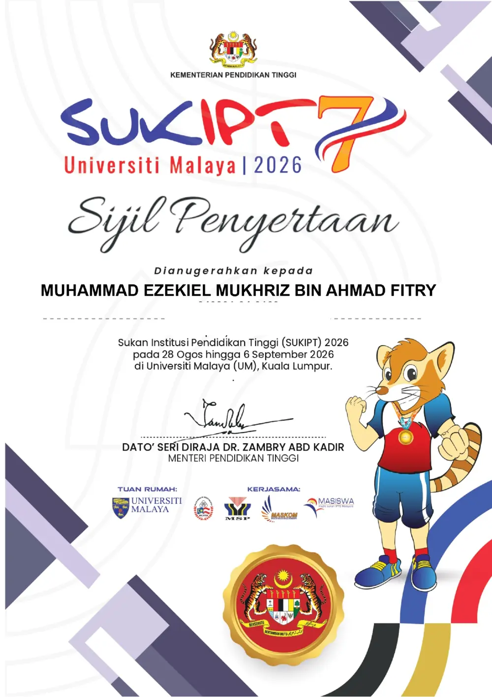
2026
Universiti Malaya · MLBB
Proof image: Participation CertificateAchievement source ↗2026
Asia Pacific University
Proof: LinkedInAchievement source ↗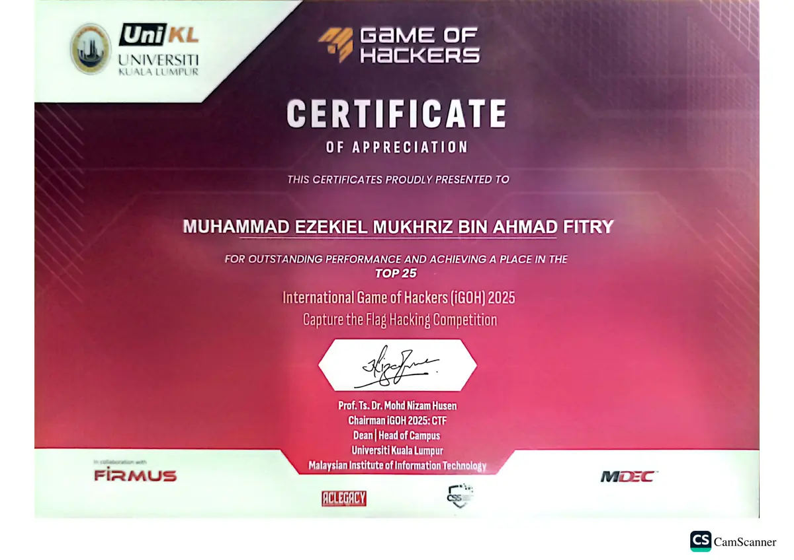
2025
UniKL MIIT
Certificate of Appreciation (Top 25)Achievement source ↗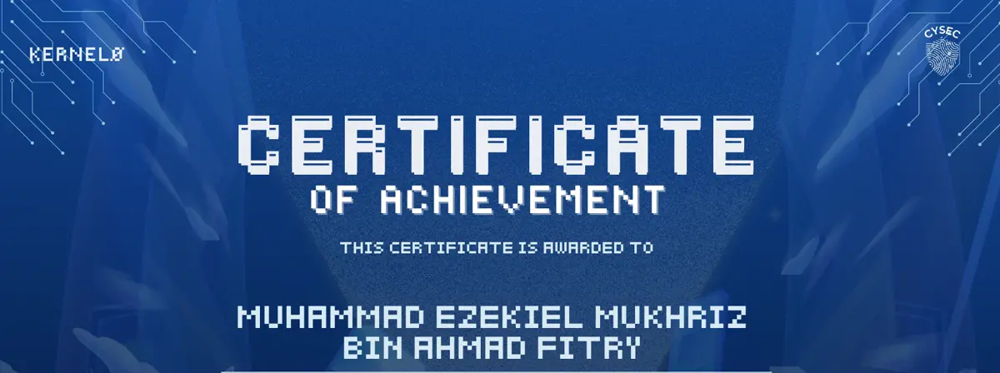
2025
German-Malaysian Institute
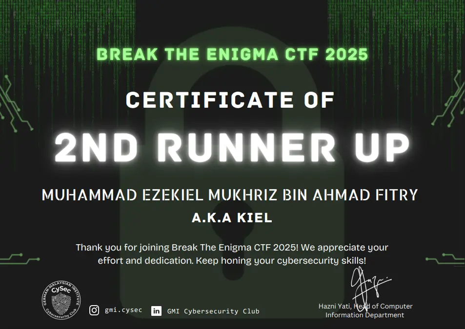
2025
German-Malaysian Institute
~> ls ~/ctf-writeups # 4 events
VI / CTF WRITE-UPS

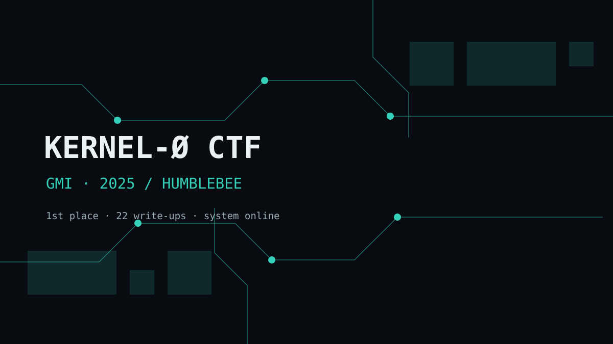
DIR · 2025 · GMI
1st Place · Kiellu4, Ha1qal, AT0
in progress
cd ./kernel-zero-gmi-2025 →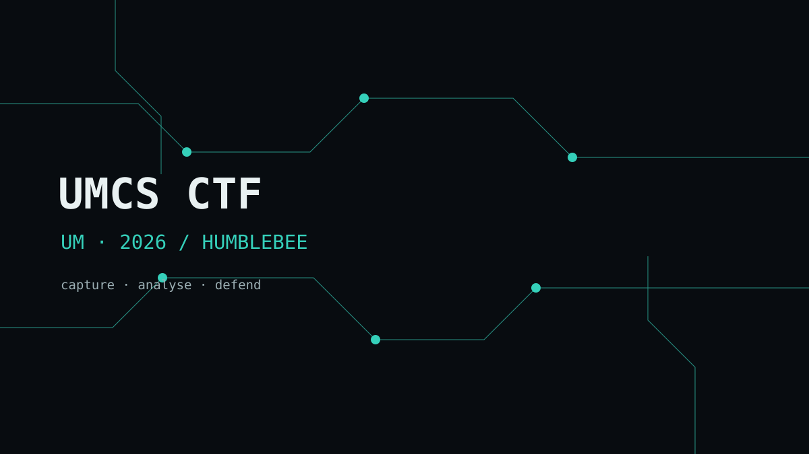
DIR · 2026 · UM
Humblebee · 8th preliminary, AD finalist, 10th final
Ha1qal · Kiellu4 · riezq · siseven
in progress
cd ./umcs-um-2026 →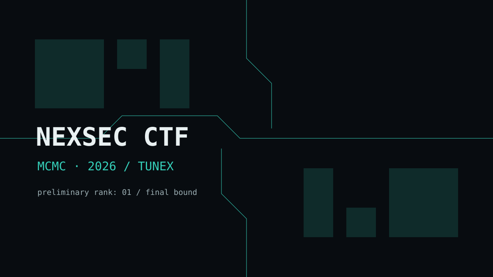
DIR · 2026 · MCMC
tuneX · 1st preliminary, advanced to final
Ha1qal · Kiellu4 · Ni5h
in progress
cd ./nexsec-mcmc-2026 →VII / LICENSES & CERTIFICATIONS
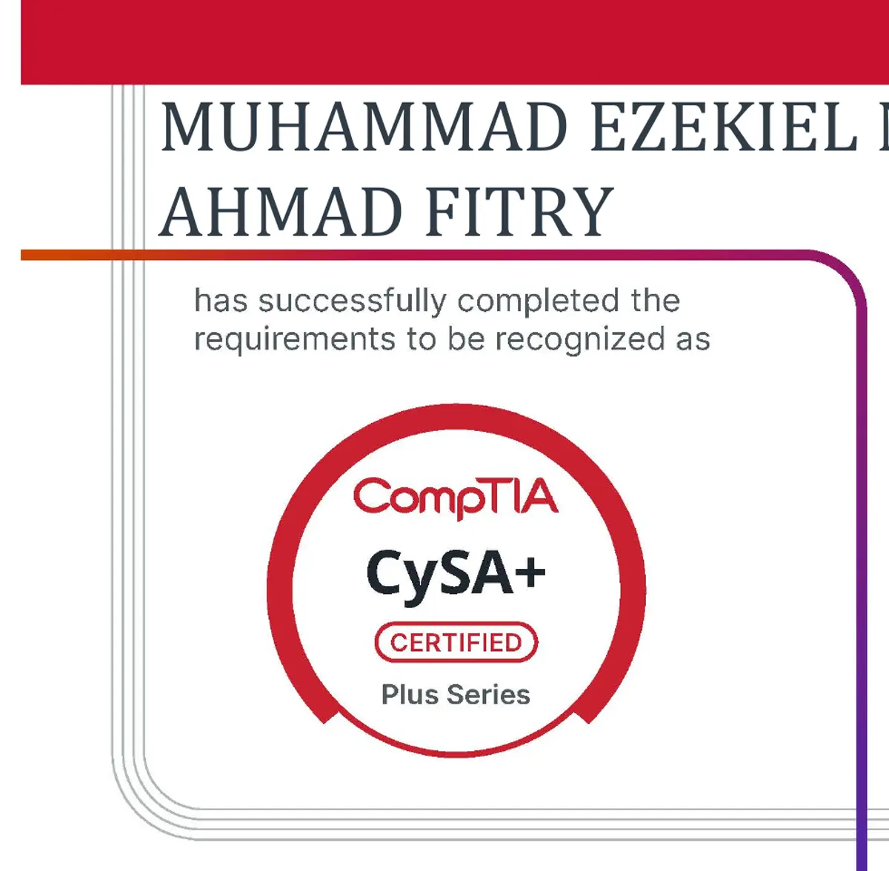
Cybersecurity Analyst
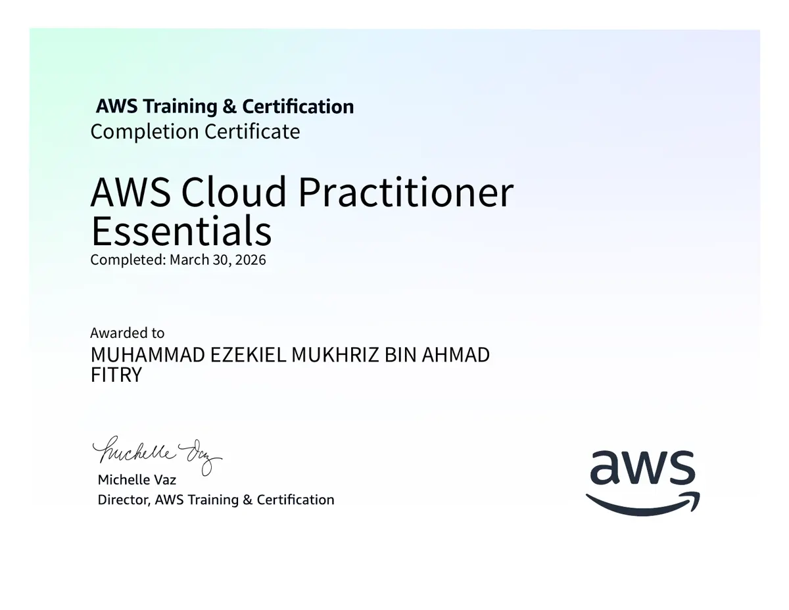
Amazon Web Services
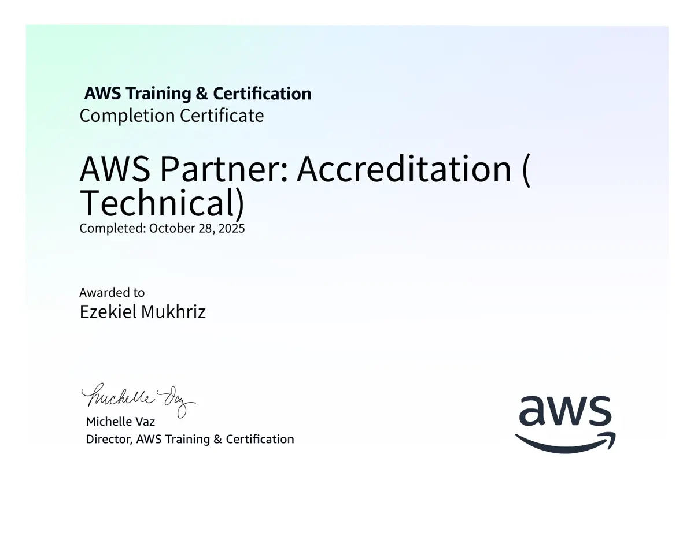
Amazon Web Services
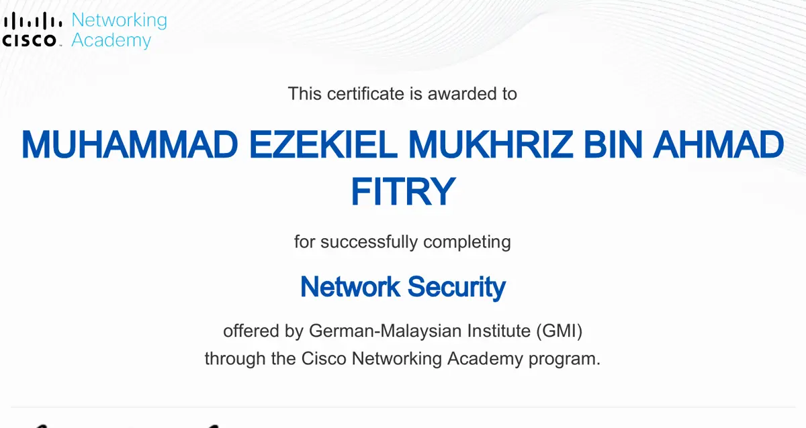
Cisco Networking Academy
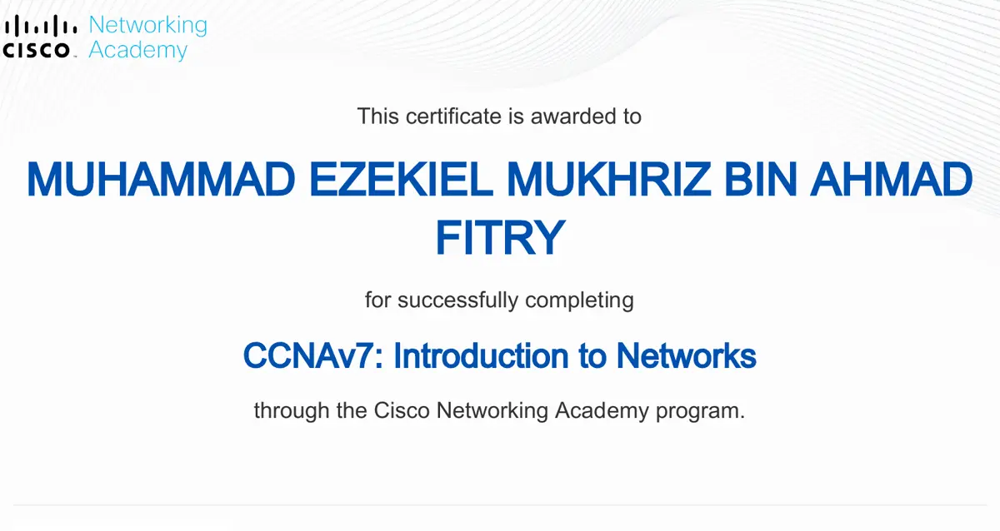
Cisco Networking Academy
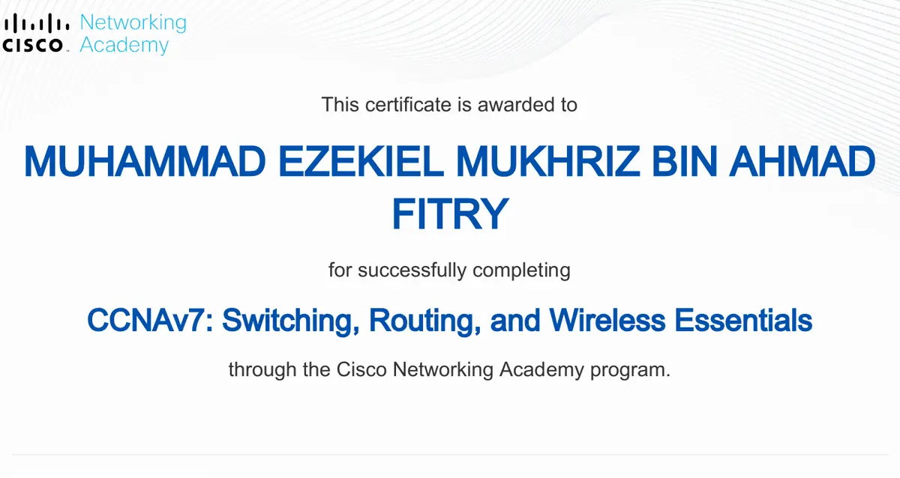
Cisco Networking Academy
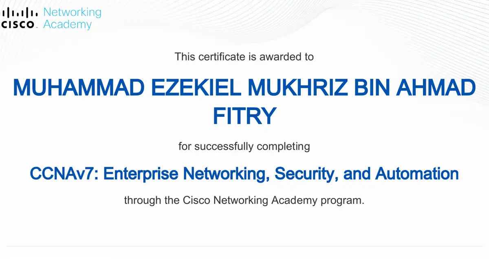
Cisco Networking Academy
~> cat contact.txt
VIII / CONTACT